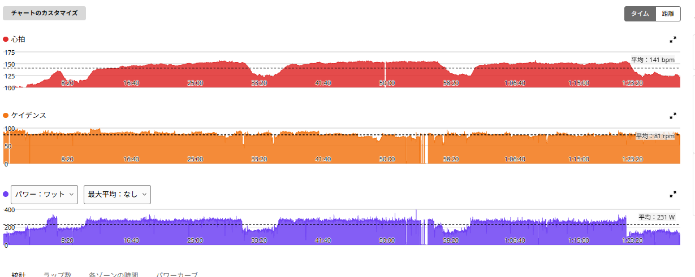

SST20分×3本。3本目まで完遂したら、終わった後の疲労がデカい！
今日はローラーでSST。前回、20分×3本に挑戦したときは、1本目277W、2本目274Wまで踏んだところで、3本目は意図的に242Wまで落とした。今回はそのリベンジである。目標は、最初から飛ばしすぎず、20分×3本を最後まで成立させること。

約47km・NP247W・TSS106
- 全体47.05km / 1時間28分08秒 / 運動量1,220kJ
- 負荷平均231W / NP247W / IF0.854 / TSS106.3 / FTP設定289W
- 心拍・回転平均141bpm / 最大158bpm / 平均81rpm
- 効果有酸素TE4.5（主な効果：テンポ）/ 無酸素TE0.0 / 運動負荷241
- 1本目20分 / 270W / 心拍平均147bpm・最大157bpm / 85rpm
- 2本目20分 / 表示267W（実質270W前後）/ 心拍平均152bpm・最大156bpm / 80rpm
- 3本目20分 / 257W / 心拍平均150bpm・最大158bpm / 80rpm
1本目は270W。前回より少し抑えた
1本目は270W、FTP289Wの約93％。前回の277Wより少し抑えた。今回は1本目だけ頑張るのではなく、3本目までつなげるのが目的である。
2本目は表示267W。最後にリンクが切れた

2本目は、Garminの表示では平均267W。ただ、この数字はそのまま受け取れない。2本目の最後の1分くらいで、パワーメーターとサイコンのリンクが切れた。そのため、平均ワットが実際より低く出ている。リンクが切れる前に見ていた範囲では、270W前後は維持できていた。なので今日の感覚としては、2本目も実質270W前後という認識である。
3本目は257Wに落ちた。でも20分は踏み切った
3本目は、やっぱり落ちた。270Wを維持するところまではできず、257W。それでも今回は20分を最後まで完遂した。前回は膝を警戒して242Wまで落としていた。今回は落ちたとはいえ257Wで、FTPの約89％。SSTの下限付近で20分を踏み切れたのは前進である。
終わった後の疲労が、かなり大きかった
今回、一番印象に残ったのは、終わった後の体の疲労だった。単純に脚がパンパンというだけではない。全身が「しっかり使った」という感じである。前日のベース走でも、一定出力を長く続ける独特のきつさを感じた。今日は、そこからさらに高い出力で20分を3本。これまで、短時間で高い出力を出す練習や、登りで強く踏むことはかなりやってきた。でも、高めの出力を長時間維持すること、疲労した状態でも最後まで出力を落としすぎないこと。今の自分には、この領域がかなり足りていないんだと思う。3本目の落ち込みが、今の課題そのものである。
当面の目標は、270・270・260W台後半
このメニューは、しばらく続ける価値がありそうだ。最終的な目標はシンプルで、20分×3本を、3本とも270W前後で揃えること。ただし、いきなり完璧を狙うつもりはない。まずは270W・270W・260W台後半まで持っていく。そこから、3本目を少しずつ270Wへ近づける。今日の257Wが次回262Wになれば前進。その次に265W。そうやって、一段ずつ上げていけばいいと思う。
苦手だから疲れる。苦手だから伸びる
今日は、かなり頑張った。3本目は落ちた。でも、20分は最後までやり切った。終わった後の疲労がかなり大きかったのは、それだけ今の自分に足りていないところをしっかり使えたということかもしれない。苦手だから疲れる。でも、苦手だからこそ伸びる余地がある。1時間300Wという目標を考えても、こういう能力は避けて通れない。ここが今の伸びしろ。そう思って、またコツコツ続ける。